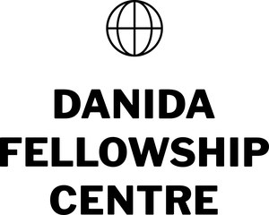

You are now signed up for the ASAP-Bio newsletter.
Here is where to find what is happening in the partnership right now.
Conferences, workshops and stories from the five partner universities.
Read the news →Scholarships offered through ASAP-Bio and how to apply.
See scholarships →Open teaching material and courses built by the partnership.
Visit the Knowledge Hub →
